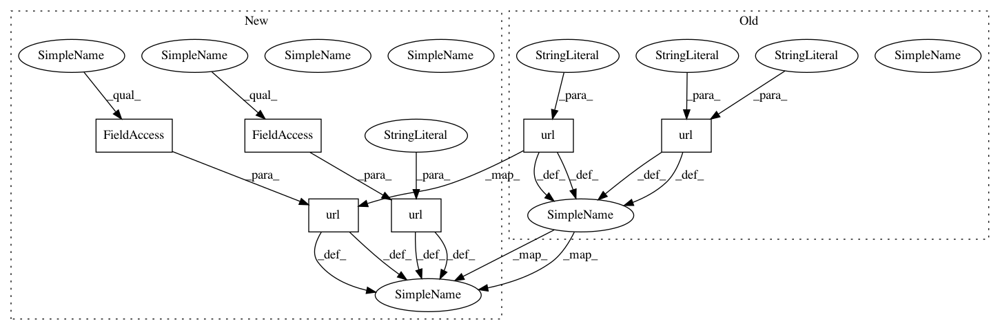

bb21defad12ee0ab0654d87b0654d484f46050bf,tests/urls.py,,,#,13
Before Change
admin.autodiscover()
urlpatterns = patterns("tests.views", // noqa
url(r"^resolving1/(.+)/(.+)/$", "resolving_view", name="positional-resolving"),
url(r"^resolving2/(?P<arg1>.+)/(?P<arg2>.+)/$", "resolving_view"),
url(r"^resolving3/(.+)/$", "resolving_view", {"arg2": "default"}),
url(r"^regular/(?P<title>.*)/$", "regular_view"),
url(r"^non_ascii_request/$", "regular_view", {"title": NonAsciiRepr()}),
url(r"^new_user/$", "new_user"),
url(r"^execute_sql/$", "execute_sql"),
url(r"^cached_view/$", "cached_view"),
url(r"^__debug__/", include(debug_toolbar.urls)),
)
After Change
from . import views
from .models import NonAsciiRepr
urlpatterns = [
url(r"^resolving1/(.+)/(.+)/$", views.resolving_view, name="positional-resolving"),
url(r"^resolving2/(?P<arg1>.+)/(?P<arg2>.+)/$", views.resolving_view),
url(r"^resolving3/(.+)/$", views.resolving_view, {"arg2": "default"}),
url(r"^regular/(?P<title>.*)/$", views.regular_view),
url(r"^non_ascii_request/$", views.regular_view, {"title": NonAsciiRepr()}),
url(r"^new_user/$", views.new_user),
url(r"^execute_sql/$", views.execute_sql),
url(r"^cached_view/$", views.cached_view),
url(r"^__debug__/", include(debug_toolbar.urls)),
]
In pattern: SUPERPATTERN
Frequency: 3
Non-data size: 6
Instances
Project Name: jazzband/django-debug-toolbar
Commit Name: bb21defad12ee0ab0654d87b0654d484f46050bf
Time: 2015-10-06
Author: aymeric.augustin@m4x.org
File Name: tests/urls.py
Class Name:
Method Name: